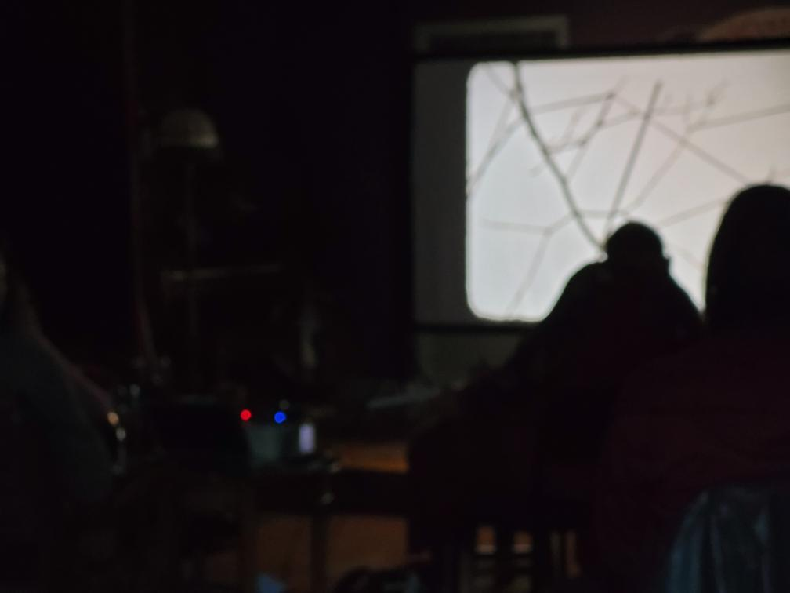
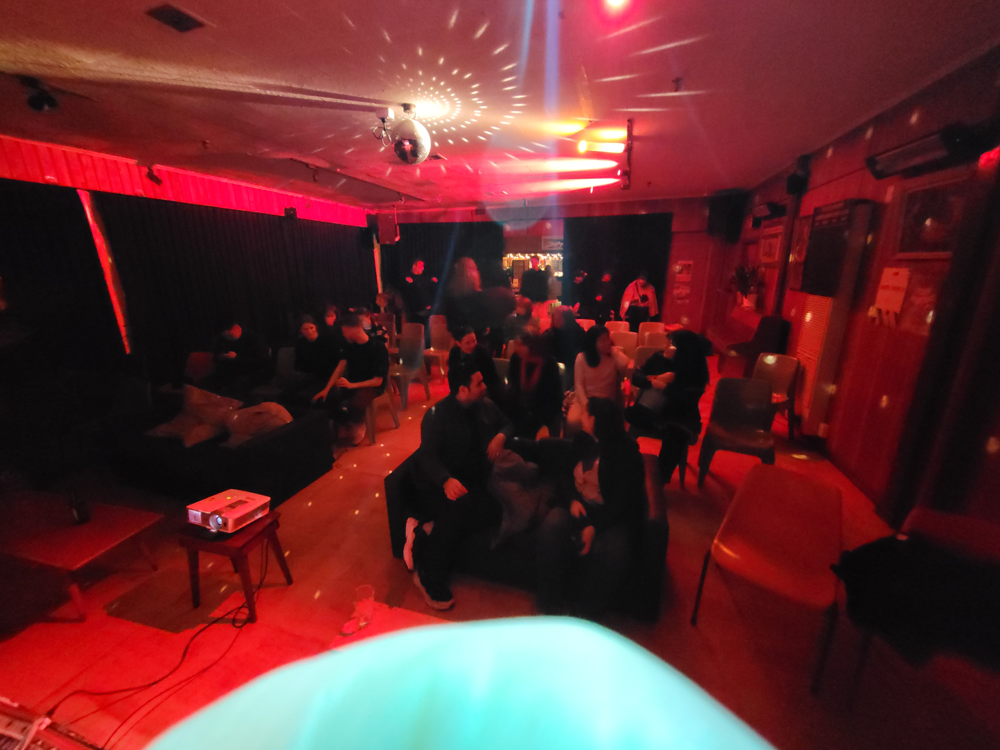
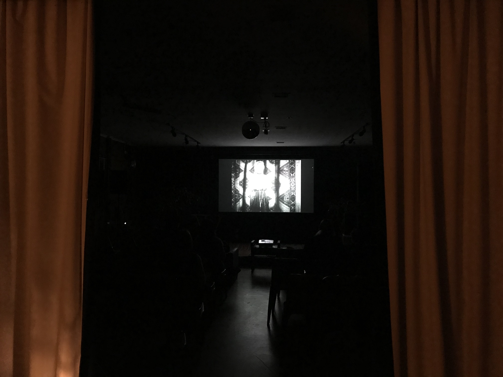

FILM ADJACENT is a Wellington-based film collective for experimental cinema
We invite academics, artists and filmmakers to curate regular screenings. Our goal is to facilitate the mass proliferation of audio-visual artworks that enrich the human sensorium
Screenings are the first Wednesday of every month at The Undercurrent. 118 Tory Street, Te Aro, Wellington 6011
Organised by Christopher Thompson and Tyler Shane Tesolin. Founded by Christopher Thompson, Tristan Kellior and Tyler Shane Tesolin. We are a non profit.
Supported by Wellington City Council and the Wellington Independant Arts Trust
  